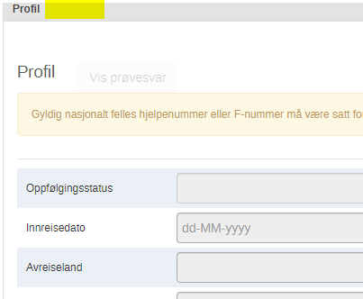
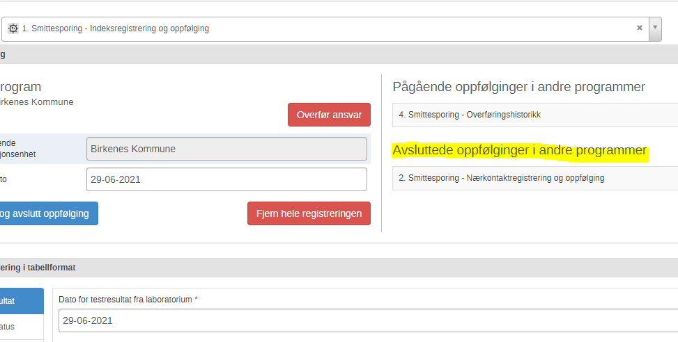

Release notes version 1.23.0
Redigeringsmuligheter i innreise og duplikat program.
Det er i ny versjon fjernet muligheter for å redigere personprofil og steget som heter innreiseinformasjon


Arbeidsprosess
- Gå til tracker capture
- Velg programmet innreiseoppfølging eller duplikatsjekk
- Gå inn på en person hvis du har noen i listen
- Sjekk at man ikke kan redigere profil og innreiseinformasjon
Se avsluttede oppfølginger
Tidligere kunne man ikke se at en person har vært registrert i enten nærkontaktregistrering eller indeksregistrering hvis den registreringen var avsluttet
I ny versjon får du se hvilke oppfølginger som er pågående og hvem som er avsluttet - Dette er for å kunne kartlegge om en tidligere indeks som senere har blitt nærkontakt skal unntas fra karantene eller ikke.

Arbeidsprosess
- Gå til tracker capture.
- Finn en nærkontakt eller indeks
- Fullfør og avslutt denne
- Registrer så person i det programmet person ikke fantes i
- Da skal du etter lagring av personprofil at person tidligere var registrert i det første programmet, og at det er en avsluttet oppfølging.